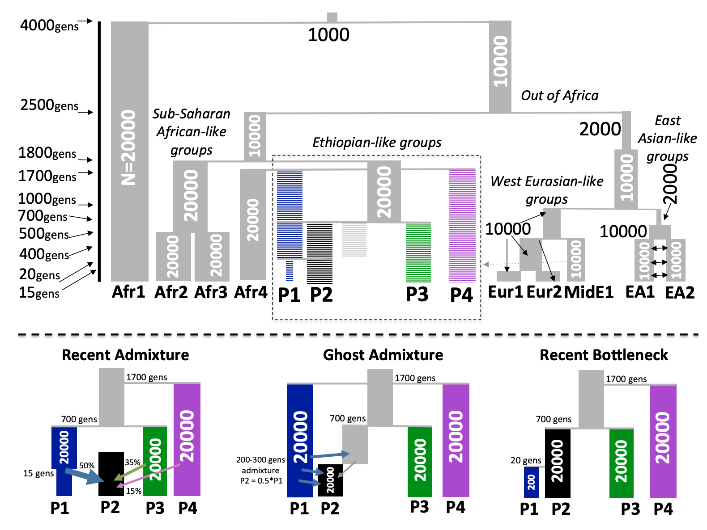
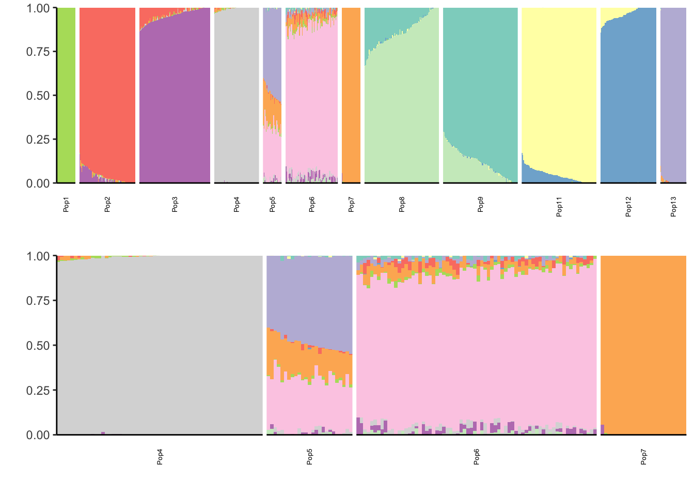
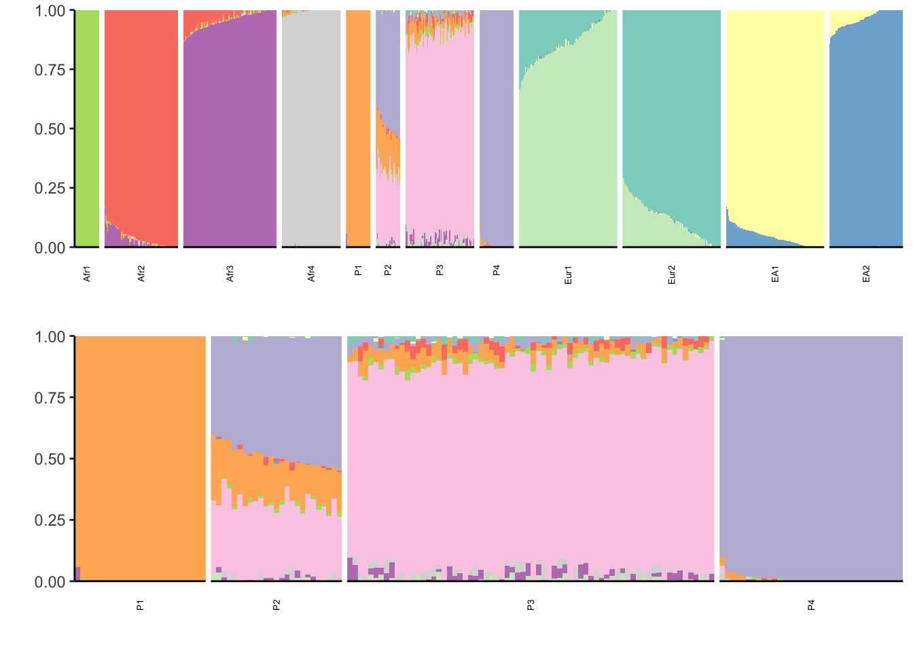
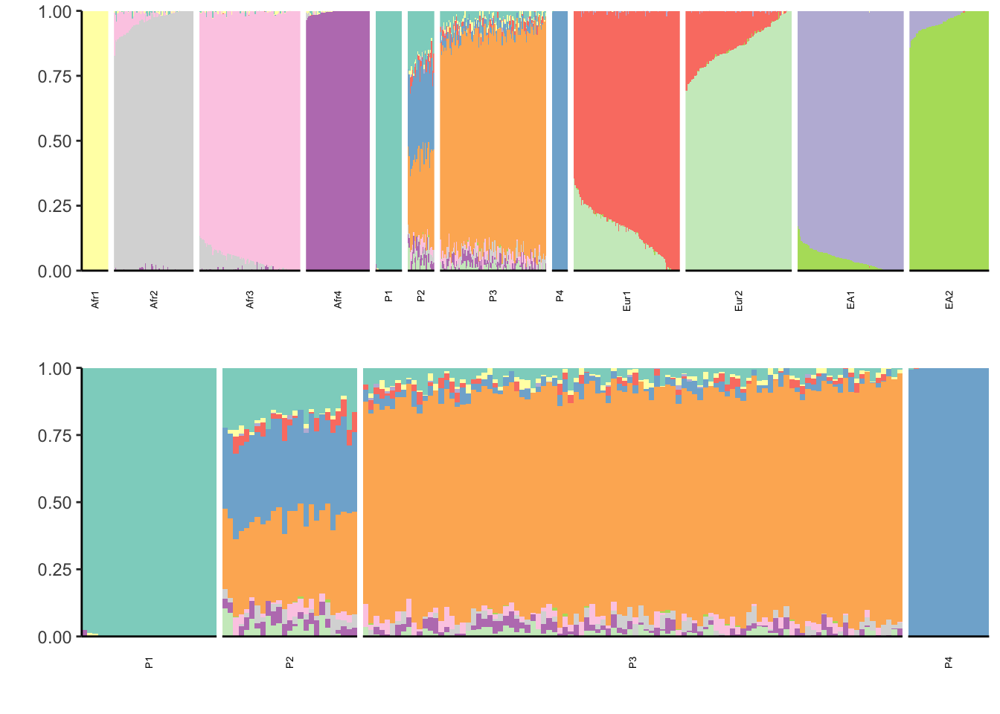
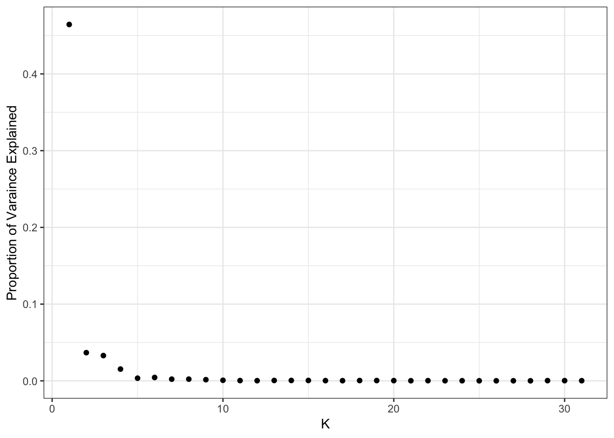
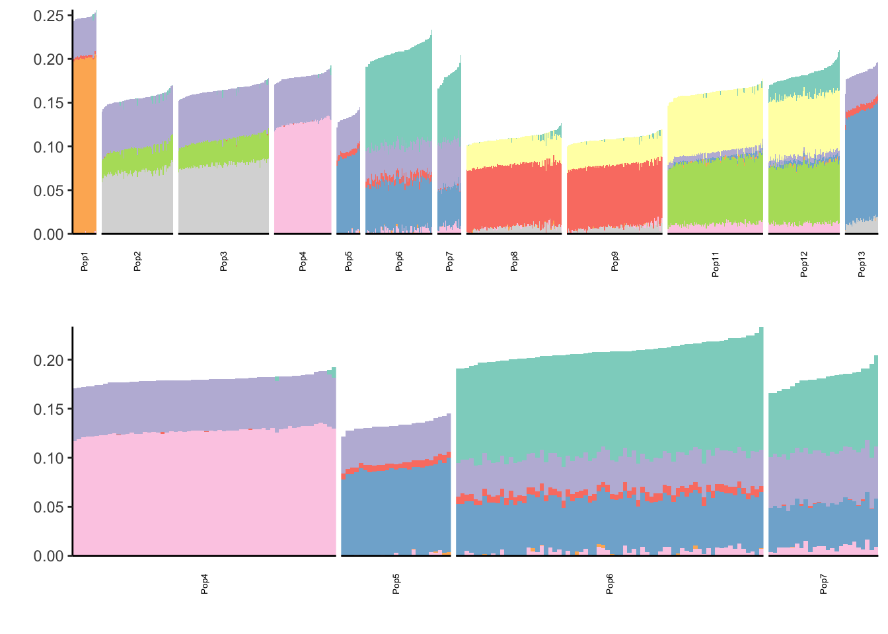
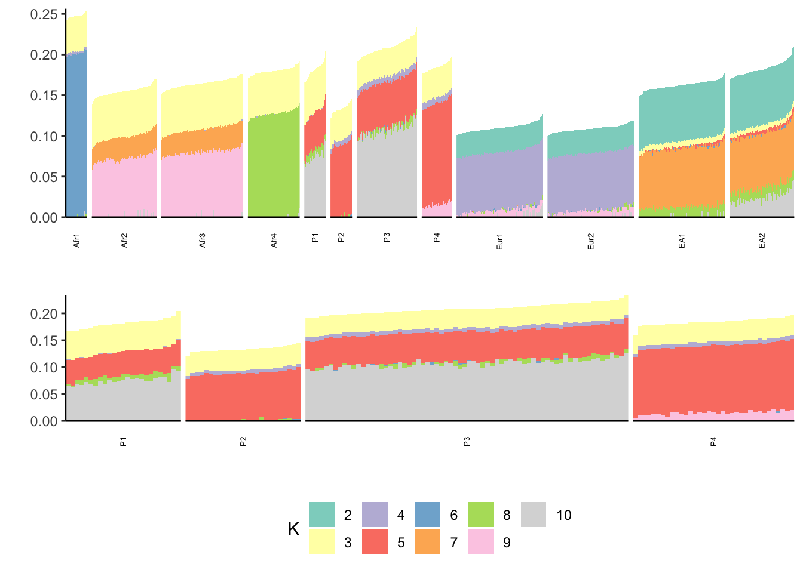
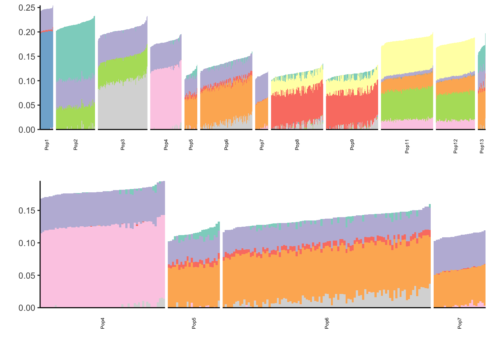
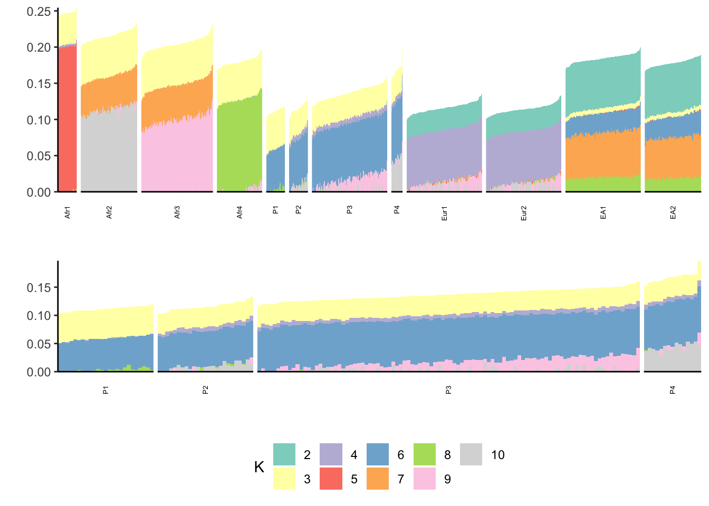

Last updated: 2019-04-19
Checks: 5 1
Knit directory: drift-workflow/analysis/
This reproducible R Markdown analysis was created with workflowr (version 1.2.0). The Report tab describes the reproducibility checks that were applied when the results were created. The Past versions tab lists the development history.
The R Markdown file has unstaged changes. To know which version of the R Markdown file created these results, you’ll want to first commit it to the Git repo. If you’re still working on the analysis, you can ignore this warning. When you’re finished, you can run wflow_publish to commit the R Markdown file and build the HTML.
Great job! The global environment was empty. Objects defined in the global environment can affect the analysis in your R Markdown file in unknown ways. For reproduciblity it’s best to always run the code in an empty environment.
The command set.seed(20190211) was run prior to running the code in the R Markdown file. Setting a seed ensures that any results that rely on randomness, e.g. subsampling or permutations, are reproducible.
Great job! Recording the operating system, R version, and package versions is critical for reproducibility.
Nice! There were no cached chunks for this analysis, so you can be confident that you successfully produced the results during this run.
Great! You are using Git for version control. Tracking code development and connecting the code version to the results is critical for reproducibility. The version displayed above was the version of the Git repository at the time these results were generated.
Note that you need to be careful to ensure that all relevant files for the analysis have been committed to Git prior to generating the results (you can use wflow_publish or wflow_git_commit). workflowr only checks the R Markdown file, but you know if there are other scripts or data files that it depends on. Below is the status of the Git repository when the results were generated:
Ignored files:
Ignored: .Rhistory
Ignored: analysis/.Rhistory
Ignored: analysis/flash_cache/
Ignored: data.tar.gz
Ignored: data/datasets/
Ignored: data/raw/
Ignored: output.tar.gz
Ignored: output/
Untracked files:
Untracked: docs/figure/badmixture.Rmd/
Unstaged changes:
Modified: analysis/badmixture.Rmd
Modified: analysis/index.Rmd
Modified: analysis/simple_tree_simulation.Rmd
Modified: code/viz.R
Note that any generated files, e.g. HTML, png, CSS, etc., are not included in this status report because it is ok for generated content to have uncommitted changes.
These are the previous versions of the R Markdown and HTML files. If you’ve configured a remote Git repository (see ?wflow_git_remote), click on the hyperlinks in the table below to view them.
| File | Version | Author | Date | Message |
|---|---|---|---|---|
| Rmd | 1a21d43 | jhmarcus | 2019-04-17 | updated simple tree doc |
Take this with a grain of salt for now as I’m still debugging / following up with some issues with the simulation data the authors of badMIXTURE provided from the paper:
Here I perform simulations from Lawson et al. 2018. These simulations are specifically designed to illustrate challenges with interpreting admixture coefficients from PSD models as population genetic parameters. Specifically they ran ADMIXTURE (K=11) on three challenging simulation scenarios which are inspired by human demographic histories. They find ADMIXTURE generates the same coefficients under these three different scenarios. The figure below and found in the supplement of the badMIXTURE paper visually describes the simulation settings:

Here I attempt to replicate their findings by running ADMIXTURE on the same datasets simulated in the paper as well as running FLASH (Drift) to see if it can distinguish these models. Note, I downloaded the plink files from their simulations from here. I then filtered on any missingness and removed variants with minor allele frequency less than 5%. One odd feature of the data is there are 12 populations in the plink files but 13 in their supplementary figure. I will have to follow up to see if this is the exact simulation data they used. I’m following up with Daniel Lawson about this issue.
Lets import some needed packages:
library(ggplot2)
library(tidyr)
library(dplyr)
library(RColorBrewer)
library(knitr)
source("../code/viz.R")
source("../code/prep.R")Here the colors of the factors between the three ADMIXTURE runs changes (I need to work on factor color matching code) but sitting with the results one can see the similarities in the highlighted 4 populations.
l_df = read.table("../output/admixture/recent_sim/Recent_admix_geno_maf.K11r1.Q", sep=" ", header=F)
K = ncol(l_df)
colnames(l_df) = 1:K
inds = read.table("../data/datasets/recent_sim/Recent_admix_geno_maf.fam", header=F, stringsAsFactors=F) %>% pull(V2)
pops = read.table("../data/datasets/recent_sim/Recent_admix_geno_maf.fam", header=F, stringsAsFactors=F) %>% pull(V1)
l_df$ID = inds
l_df$pop = factor(pops, levels=paste0("Pop", 1:13))
pops = paste0("Pop", 1:13) # all unique pop labels
l_df$ID = factor(l_df$ID, levels = l_df$ID) # make sure the ids are sorted
l_gath_df = l_df %>% gather(K, value, -ID, -pop)
l_gath_df47 = l_df %>% gather(K, value, -ID, -pop) %>% filter(pop %in% paste0("Pop", 4:7))
pall = structure_plot(gath_df=l_gath_df, colset="Set3", facet_levels=pops,
facet_grp="pop", label_size=5, fact_type="structure") +
theme(plot.title = element_text(size=6))
p47 = structure_plot(gath_df=l_gath_df47, colset="Set3", facet_levels=pops,
facet_grp="pop", label_size=5, fact_type="structure") +
theme(plot.title = element_text(size=6))
p = cowplot::plot_grid(pall, p47, nrow = 2, align = "v") Warning in align_plots(plotlist = plots, align = align, axis = axis):
Complex graphs cannot be vertically aligned unless axis parameter is set
properly. Placing graphs unaligned.print(p)
l_df = read.table("../output/admixture/marginalisation_sim/Marginalisation_admix_geno_maf.K11r1.Q", sep=" ", header=F)
K = ncol(l_df)
colnames(l_df) = 1:K
inds = read.table("../data/datasets//marginalisation_sim/Marginalisation_admix_geno_maf.fam", header=F, stringsAsFactors=F) %>%
pull(V1)
pops = read.table("../data/datasets/marginalisation_sim/Marginalisation_admix_geno_maf.fam", header=F, stringsAsFactors=F) %>%
pull(V2)
l_df$ID = inds
l_df$pop = pops
pops = paste0("Pop", 1:13) # all unique pop labels
l_df$ID = factor(l_df$ID, levels = l_df$ID) # make sure the ids are sorted
l_gath_df = l_df %>% gather(K, value, -ID, -pop)
l_gath_df47 = l_df %>% gather(K, value, -ID, -pop) %>% filter(pop %in% paste0("Pop", 4:7))
pall = structure_plot(gath_df=l_gath_df, colset="Set3", facet_levels=pops,
facet_grp="pop", label_size=5, fact_type="structure") +
theme(plot.title = element_text(size=6))
p47 = structure_plot(gath_df=l_gath_df47, colset="Set3", facet_levels=pops,
facet_grp="pop", label_size=5, fact_type="structure") +
theme(plot.title = element_text(size=6))
p = cowplot::plot_grid(pall, p47, nrow = 2)
print(p)
There is something very funky about the Remnants simulation. See populations 8-13.
l_df = read.table("../output/admixture/remnants_sim/Remnants_admix_geno_maf.K11r1.Q", sep=" ", header=F)
K = ncol(l_df)
colnames(l_df) = 1:K
inds = read.table("../data/datasets/remnants_sim/Remnants_admix_geno_maf.fam", header=F, stringsAsFactors=F) %>% pull(V1)
pops = read.table("../data/datasets/remnants_sim/Remnants_admix_geno_maf.fam", header=F, stringsAsFactors=F) %>% pull(V2)
l_df$ID = inds
l_df$pop = pops
pops = paste0("Pop", 1:13)# all unique pop labels
l_df$ID = factor(l_df$ID, levels = l_df$ID) # make sure the ids are sorted
l_gath_df = l_df %>% gather(K, value, -ID, -pop)
l_gath_df47 = l_df %>% gather(K, value, -ID, -pop) %>% filter(pop %in% paste0("Pop", 4:7))
pall = structure_plot(gath_df=l_gath_df, colset="Set3", facet_levels=pops,
facet_grp="pop", label_size=5, fact_type="structure") +
theme(plot.title = element_text(size=6))
p47 = structure_plot(gath_df=l_gath_df47, colset="Set3", facet_levels=pops,
facet_grp="pop", label_size=5, fact_type="structure") +
theme(plot.title = element_text(size=6))
p = cowplot::plot_grid(pall, p47, nrow = 2)
print(p)
flash_fit = readRDS("../output/flash_greedy/recent_sim/Recent_admix_geno_maf.rds")
plot_pve(flash_fit)
print(flash_fit$pve) [1] 4.644314e-01 3.672962e-02 3.293419e-02 1.533617e-02 3.460167e-03
[6] 4.380101e-03 2.193011e-03 2.220532e-03 1.516786e-03 7.452720e-04
[11] 3.638727e-04 2.204384e-04 4.979738e-04 5.088945e-04 5.083526e-04
[16] 2.872698e-04 2.060834e-04 3.908611e-04 3.955174e-04 2.987267e-04
[21] 1.552774e-04 2.467179e-04 1.647525e-04 1.561975e-04 9.676400e-05
[26] 8.065071e-05 1.010647e-04 7.148456e-05 2.887337e-04 2.635893e-04
[31] 1.846785e-04It looks like the pve drops off at around 10 factors so lets go with visualizing the top 10:
l_df = as.data.frame(flash_fit$loadings$normalized.loadings[[1]])
colnames(l_df)[1:31] = 1:31
inds = read.table("../data/datasets/recent_sim/Recent_admix_geno_maf.fam", header=F, stringsAsFactors=F) %>% pull(V2)
pops = read.table("../data/datasets/recent_sim/Recent_admix_geno_maf.fam", header=F, stringsAsFactors=F) %>% pull(V1)
l_df$ID = inds
l_df$pop = pops
pops = paste0("Pop", 1:13)
factors_incl = paste0(2:10)
l_gath_df = l_df %>%
select_if(~sum(!is.na(.)) > 0) %>%
gather(K, value, -ID, -pop) %>%
filter(K %in% factors_incl)
l_gath_df47 = l_df %>%
filter(pop %in% paste0("Pop", 4:7)) %>%
select_if(~sum(!is.na(.)) > 0) %>%
gather(K, value, -ID, -pop) %>%
filter(K %in% factors_incl)
pall = structure_plot(gath_df=l_gath_df, colset="Set3", facet_levels=pops,
facet_grp="pop", label_size=5, fact_type="nonnegative") +
theme(plot.title = element_text(size=6))
p47 = structure_plot(gath_df=l_gath_df47, colset="Set3", facet_levels=pops,
facet_grp="pop", label_size=5, fact_type="nonnegative") +
theme(plot.title = element_text(size=6))
p = cowplot::plot_grid(pall, p47, nrow = 2)
print(p)
Looks pretty clean!
flash_fit = readRDS("../output/flash_greedy/marginalisation_sim/Marginalisation_admix_geno_maf.rds")
plot_pve(flash_fit)
print(flash_fit$pve) [1] 4.650849e-01 3.675585e-02 3.233046e-02 1.511297e-02 4.308358e-03
[6] 2.896828e-03 2.464024e-03 2.282352e-03 6.153068e-04 5.829713e-04
[11] 4.275390e-04 5.578858e-04 5.114740e-04 3.479125e-04 1.310698e-04
[16] 6.477571e-04 3.644369e-04 8.658475e-05 2.993560e-04 4.205884e-04
[21] 4.013920e-04 2.405113e-04 1.489529e-04 3.378401e-04 1.160602e-04
[26] 2.484946e-04 1.684698e-04 1.800022e-04 2.718841e-04 1.748917e-04
[31] 2.117316e-04This also seems to drop off at 10 factors so lets visualize that:
l_df = as.data.frame(flash_fit$loadings$normalized.loadings[[1]])
colnames(l_df)[1:31] = 1:31
inds = read.table("../data/datasets/marginalisation_sim/Marginalisation_admix_geno_maf.fam", header=F, stringsAsFactors=F) %>% pull(V1)
pops = read.table("../data/datasets/marginalisation_sim/Marginalisation_admix_geno_maf.fam", header=F, stringsAsFactors=F) %>% pull(V2)
l_df$ID = inds
l_df$pop = pops
pops = paste0("Pop", 1:13)
factors_incl = paste0(2:10)
l_gath_df = l_df %>%
select_if(~sum(!is.na(.)) > 0) %>%
gather(K, value, -ID, -pop) %>%
filter(K %in% factors_incl)
l_gath_df47 = l_df %>%
filter(pop %in% paste0("Pop", 4:7)) %>%
select_if(~sum(!is.na(.)) > 0) %>%
gather(K, value, -ID, -pop) %>%
filter(K %in% factors_incl)
pall = structure_plot(gath_df=l_gath_df, colset="Set3", facet_levels=pops,
facet_grp="pop", label_size=5, fact_type="nonnegative") +
theme(plot.title = element_text(size=6))
p47 = structure_plot(gath_df=l_gath_df47, colset="Set3", facet_levels=pops,
facet_grp="pop", label_size=5, fact_type="nonnegative") +
theme(plot.title = element_text(size=6))
p = cowplot::plot_grid(pall, p47, nrow = 2)
print(p)
flash_fit = readRDS("../output/flash_greedy/remnants_sim/Remnants_admix_geno_maf.rds")
plot_pve(flash_fit)
print(flash_fit$pve) [1] 4.650896e-01 3.224806e-02 3.719610e-02 1.446442e-02 3.490551e-03
[6] 2.377310e-03 1.795288e-03 2.196230e-03 2.981648e-03 8.615182e-04
[11] 5.692530e-04 4.063218e-04 5.629490e-04 2.410158e-04 2.481862e-04
[16] 4.541307e-04 2.923784e-04 3.260667e-04 2.663500e-04 6.961251e-05
[21] 3.122211e-04 2.113871e-04 2.954215e-04 3.431343e-04 7.240811e-05
[26] 1.982314e-04 1.477614e-04 1.569933e-04 7.707317e-05 8.636696e-05
[31] 1.029189e-04Yet again seems to drop off at 10 factors:
flash_fit = readRDS("../output/flash_greedy/remnants_sim/Remnants_admix_geno_maf.rds")
l_df = as.data.frame(flash_fit$loadings$normalized.loadings[[1]])
colnames(l_df)[1:31] = 1:31
inds = read.table("../data/datasets/remnants_sim/Remnants_admix_geno_maf.fam", header=F, stringsAsFactors=F) %>% pull(V1)
pops = read.table("../data/datasets/remnants_sim/Remnants_admix_geno_maf.fam", header=F, stringsAsFactors=F) %>% pull(V2)
l_df$ID = inds
l_df$pop = pops
pops = paste0("Pop", 1:13)
factors_incl = paste0(2:10)
l_gath_df = l_df %>%
select_if(~sum(!is.na(.)) > 0) %>%
gather(K, value, -ID, -pop) %>%
filter(K %in% factors_incl)
l_gath_df47 = l_df %>%
filter(pop %in% paste0("Pop", 4:7)) %>%
select_if(~sum(!is.na(.)) > 0) %>%
gather(K, value, -ID, -pop) %>%
filter(K %in% factors_incl)
pall = structure_plot(gath_df=l_gath_df, colset="Set3", facet_levels=pops,
facet_grp="pop", label_size=5, fact_type="nonnegative") +
theme(plot.title = element_text(size=6))
p47 = structure_plot(gath_df=l_gath_df47, colset="Set3", facet_levels=pops,
facet_grp="pop", label_size=5, fact_type="nonnegative") +
theme(plot.title = element_text(size=6))
p = cowplot::plot_grid(pall, p47, nrow = 2)
print(p)
sessionInfo()R version 3.5.1 (2018-07-02)
Platform: x86_64-apple-darwin13.4.0 (64-bit)
Running under: macOS 10.14.2
Matrix products: default
BLAS/LAPACK: /Users/jhmarcus/miniconda3/lib/R/lib/libRblas.dylib
locale:
[1] en_US.UTF-8/en_US.UTF-8/en_US.UTF-8/C/en_US.UTF-8/en_US.UTF-8
attached base packages:
[1] stats graphics grDevices utils datasets methods base
other attached packages:
[1] knitr_1.21 RColorBrewer_1.1-2 dplyr_0.8.0.1
[4] tidyr_0.8.2 ggplot2_3.1.0
loaded via a namespace (and not attached):
[1] Rcpp_1.0.0 compiler_3.5.1 pillar_1.3.1 git2r_0.23.0
[5] plyr_1.8.4 workflowr_1.2.0 tools_3.5.1 digest_0.6.18
[9] evaluate_0.12 tibble_2.0.1 gtable_0.2.0 pkgconfig_2.0.2
[13] rlang_0.3.1 yaml_2.2.0 xfun_0.4 flashier_0.1.1
[17] withr_2.1.2 stringr_1.4.0 fs_1.2.6 rprojroot_1.3-2
[21] grid_3.5.1 tidyselect_0.2.5 cowplot_0.9.4 glue_1.3.0
[25] R6_2.4.0 rmarkdown_1.11 reshape2_1.4.3 purrr_0.3.0
[29] magrittr_1.5 whisker_0.3-2 backports_1.1.3 scales_1.0.0
[33] htmltools_0.3.6 assertthat_0.2.0 colorspace_1.4-0 labeling_0.3
[37] stringi_1.2.4 lazyeval_0.2.1 munsell_0.5.0 crayon_1.3.4